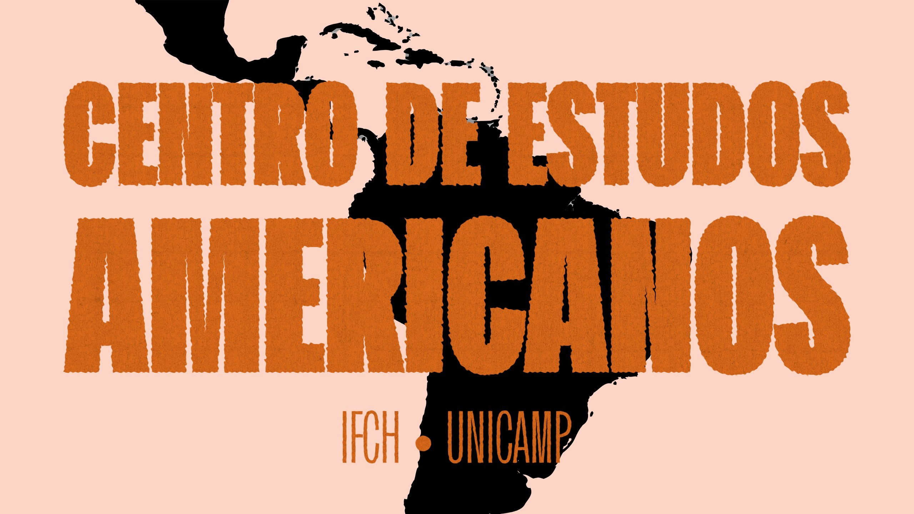

O CEAMP é um centro de pesquisa sediado no Instituto de Filosofia e Ciências Humanas da Unicamp, dedicado aos estudos sobre a história da América Latina. Desde o final da década de 1980, reúne pesquisadores comprometidos com a produção e a difusão do conhecimento sobre o continente. Neste espaço, você pode conhecer nossa trajetória, nossos pesquisadores e nossa produção acadêmica.
Nossa história →Como o CEAMP nasceu em 2006 e se tornou um espaço de pesquisa sobre a história das Américas.
Ver mais →Coordenação, pesquisadores em atividade e associados que constroem a produção do grupo.
Ver mais →Teses, dissertações e fontes documentais, com busca e filtros por país, século e período.
Ver mais →Fale com o CEAMP: endereço, e-mail e um formulário para enviar sua mensagem.
Ver mais →